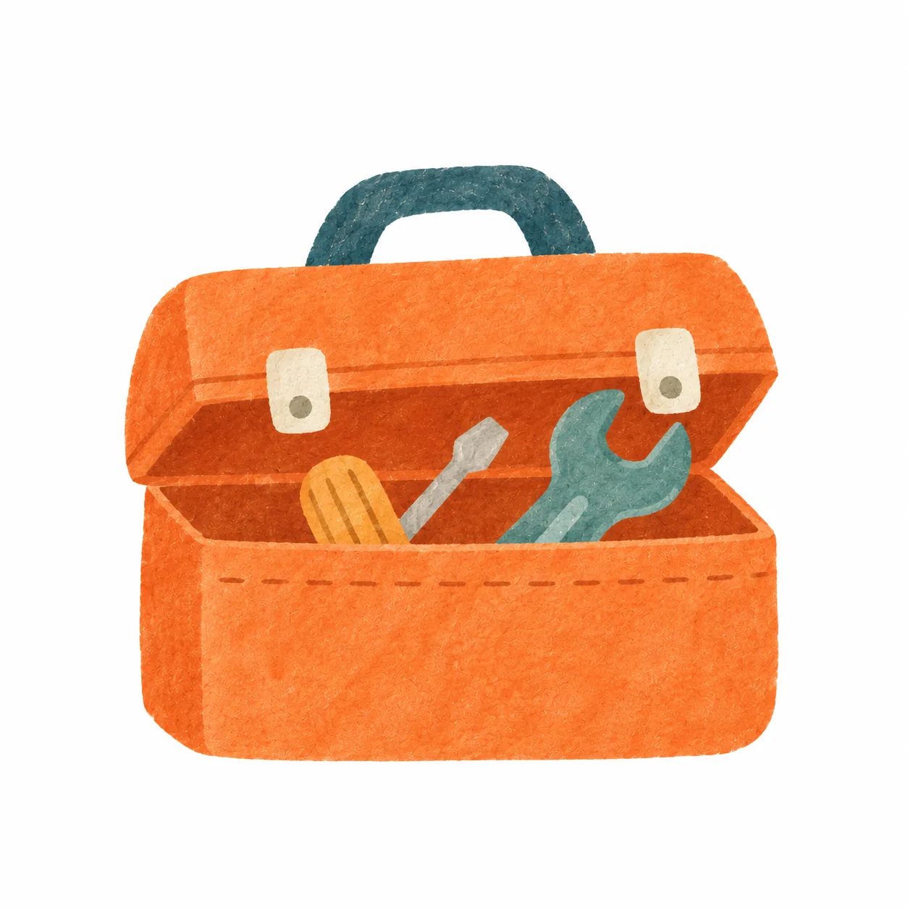
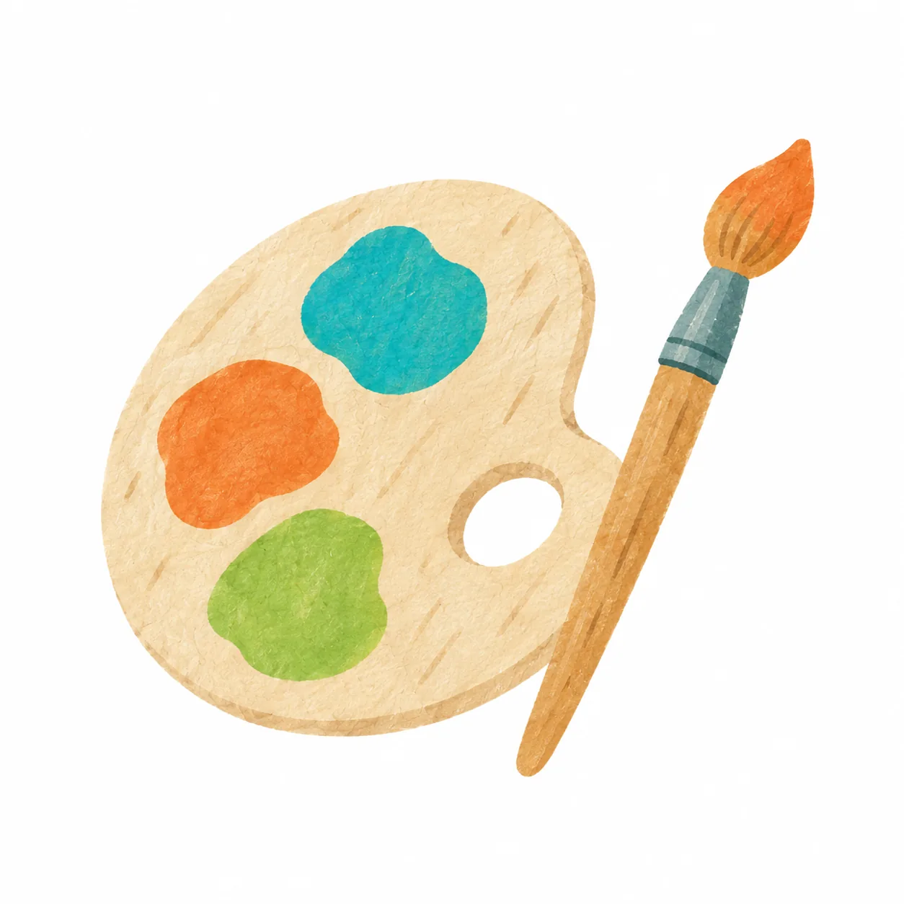
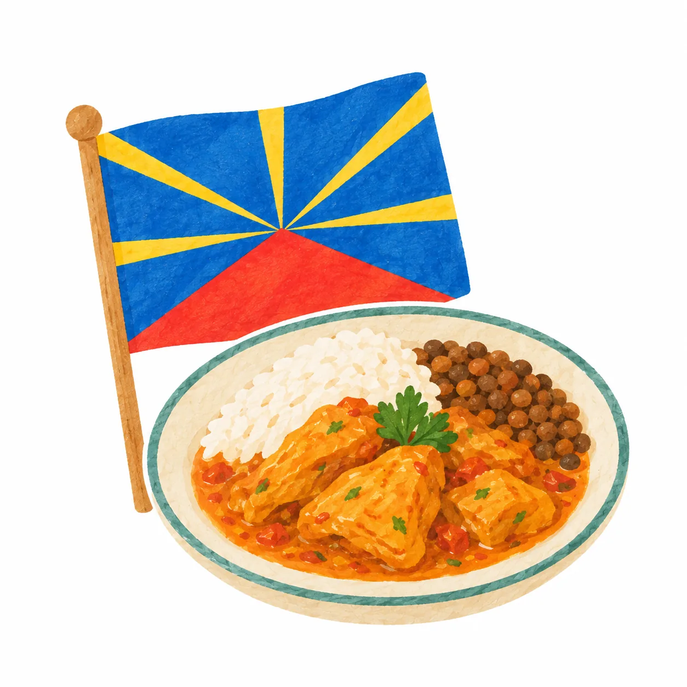
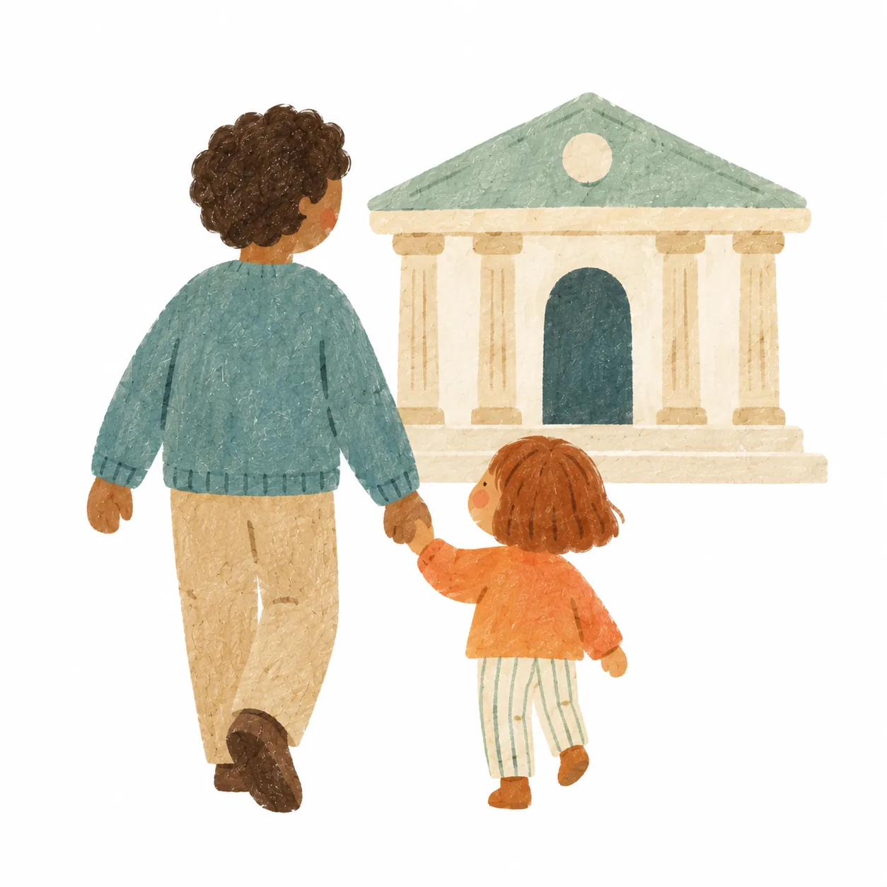
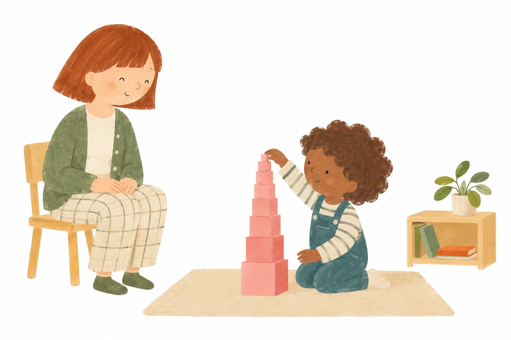
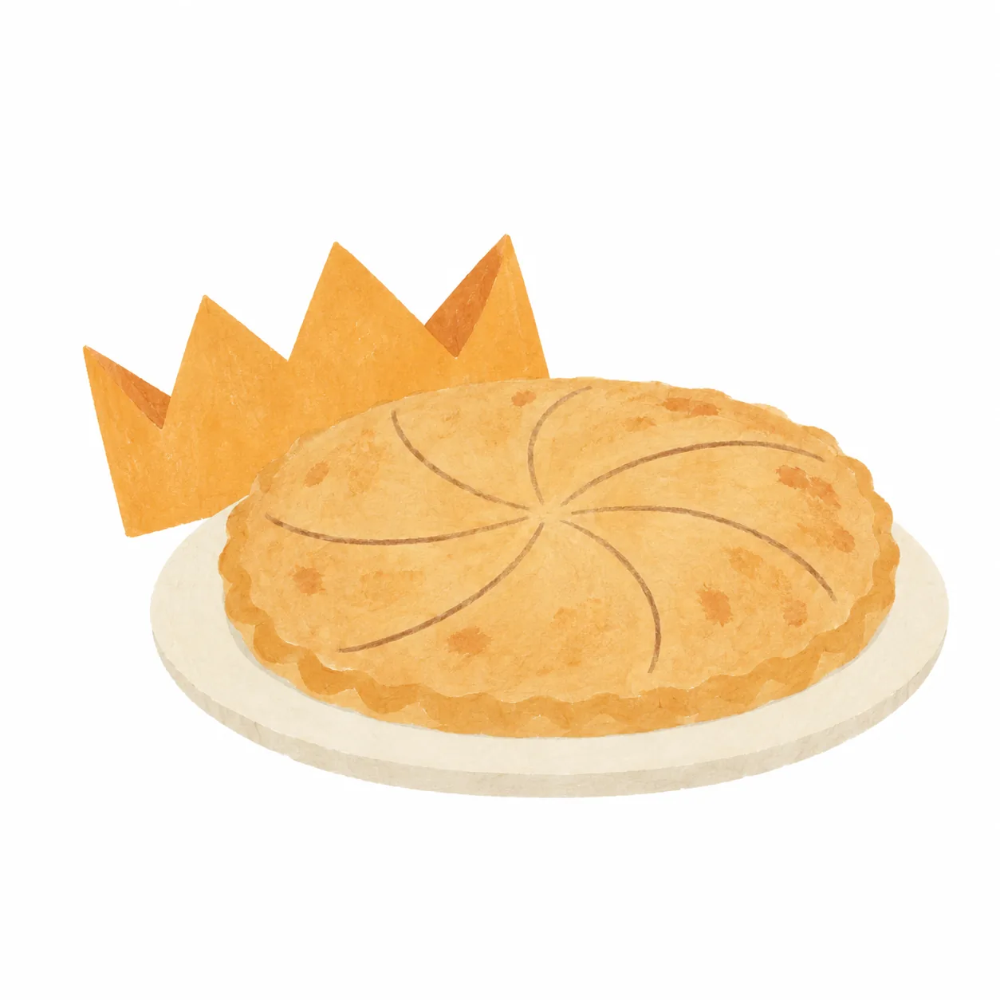
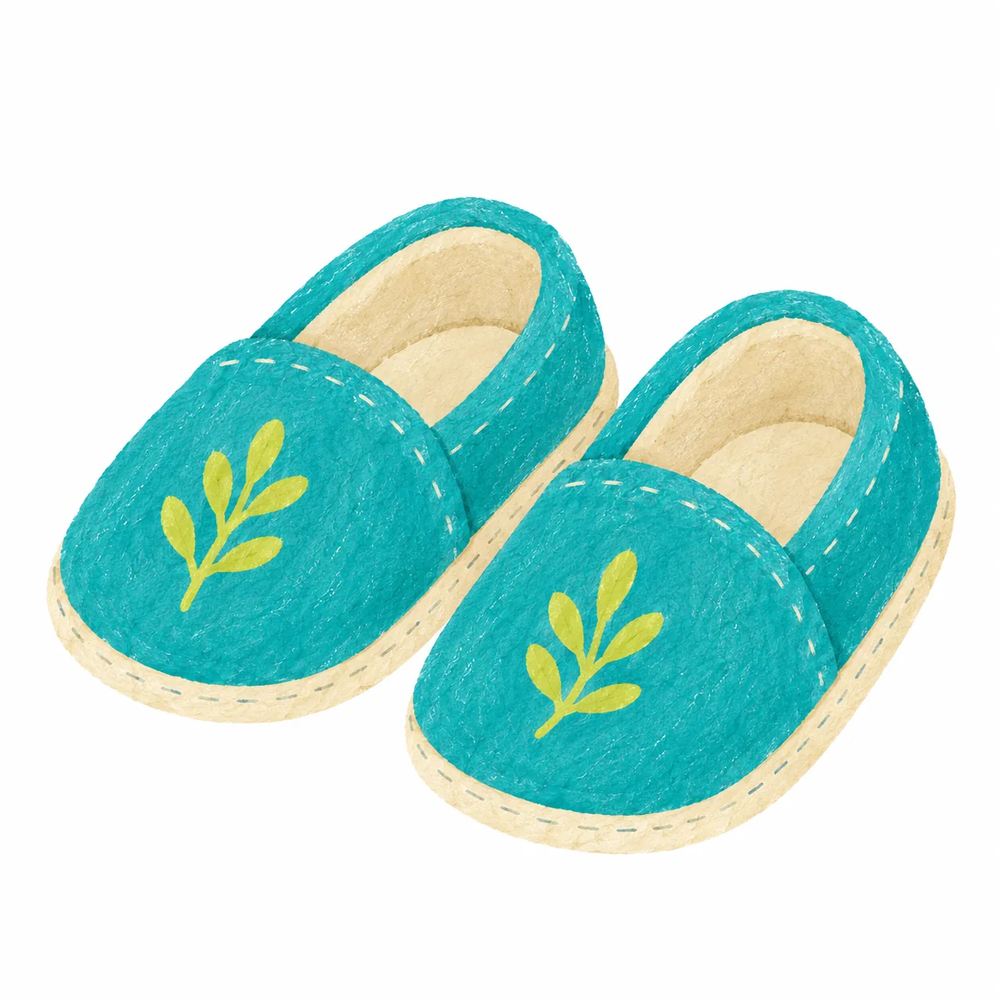
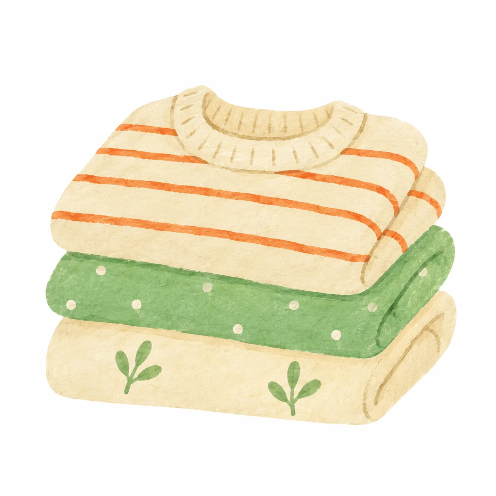
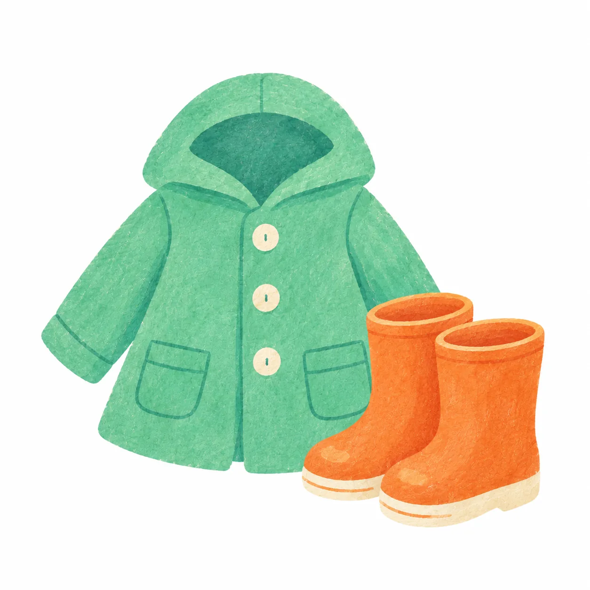
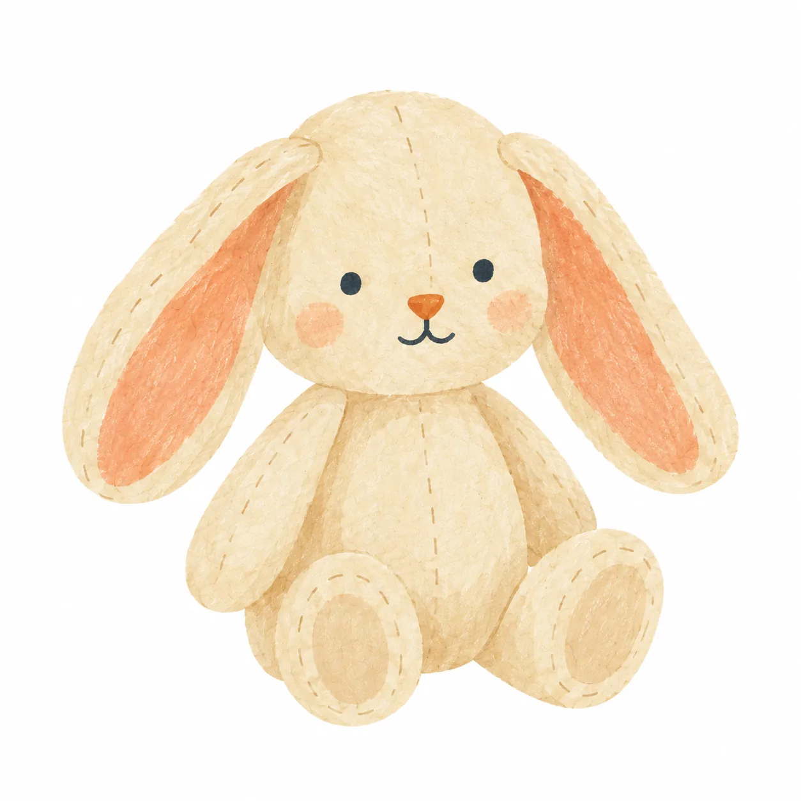

Le matin
8h15 – 8h45
Accueil périscolaire
Un accueil payant est proposé aux familles qui ont besoin de déposer leur enfant avant l’ouverture de l’école.
Voir les tarifsHoraires, accueil périscolaire, repas, calendrier scolaire… retrouvez ici les informations essentielles pour organiser simplement le quotidien de votre enfant.
Nous veillons à offrir un cadre accueillant, sécurisant et respectueux du rythme de chacun.

L’école accueille les enfants les lundi, mardi, jeudi et vendredi.
Le mercredi, l’école est fermée aux enseignements.
Un accueil payant est proposé aux familles qui ont besoin de déposer leur enfant avant l’ouverture de l’école.
Voir les tarifsLes familles peuvent arriver librement pendant cette plage horaire.
À 9h00, les portes ferment afin de préserver la sécurité, le démarrage du temps de travail et la concentration des enfants.
Les familles peuvent venir chercher leur enfant librement pendant cette plage horaire.
À partir de 16h15, les enfants encore présents rejoignent l’accueil périscolaire.
Voir les tarifsChaque enfant apporte son déjeuner dans une lunch box, préparée à la maison selon les goûts et les habitudes de sa famille. Conservé avec un pain de glace et réchauffé sur place si besoin grâce à l’espace cuisine de chaque ambiance, le repas garde ainsi quelque chose de familier : un petit goût de la maison au milieu de la journée d’école.
À l’heure du déjeuner, les lunch box s’ouvrent et deviennent aussi un sujet de curiosité : on regarde ce que les autres ont apporté, on parle d’un plat, d’une recette, de ce que l’on aime ou de ce que l’on ne connaît pas encore. Le repas devient naturellement un moment d’échange et de découverte.

Un temps calme, convivial et soigné, qui fait pleinement partie de la vie de l’école
L’autonomie et les règles de politesse (grâce et courtoisie) y ont toute leur place. À tour de rôle, les enfants participent à la mise en place de la table, débarrassent leur assiette et prennent soin de l’espace partagé, sans oublier les petits rituels du repas : se souhaiter « Bon appétit ! », attendre les autres, demander avec politesse et respecter chacun à table.
Chez les 3–6 ans, on s’installe très souvent sur la terrasse, hiver comme été lorsque la météo le permet. Chez les 6–12 ans, une attention particulière est portée au plaisir d’une jolie table : une nappe, quelques fleurs, de la vaisselle soigneusement installée…
Le petit creux de la matinée ou de l'après-midi peut tordre les petits estomacs de ceux et celles qui se sont bien concentrés !
Antoine organise un roulement entre les familles pour que des fruits frais soient disponibles pour tous les enfants tout au long de la semaine.
Préparer la collation est une activité à part entière : sortir le matériel, découper les fruits, puis nettoyer et ranger. Les enfants développent ainsi leur autonomie, participent à la vie commune et prennent soin de leurs besoins.
Sortir les ingrédients et les ustensiles, préparer la pâte, puis tout nettoyer et ranger : les enfants participent à chaque étape. Pour les plus petits, cette activité peut occuper toute une matinée, en prenant le temps de faire par soi-même et d’aller jusqu’au bout.
Chez les 3–6 ans, une salle de sieste indépendante de l’ambiance permet aux enfants qui en ont besoin de se reposer au calme après le déjeuner.

2 rendez-vous individuels sont prévus dans l’année avec les éducateurs, généralement avant les vacances de Noël puis en fin d’année scolaire.
Ces temps permettent de faire le point sur le parcours de l’enfant, ses apprentissages, son autonomie, sa place dans l’ambiance et son évolution au fil des mois.
C’est aussi l’occasion pour les parents de partager leurs observations et de poser leurs questions.
Aux Petons, les parents ne restent pas toujours de l’autre côté de la porte. Selon les projets et les besoins de l’ambiance, ils peuvent être invités à venir partager quelque chose avec les enfants :

présenter leur métier,
faire découvrir une passion ou un savoir-faire,
parler d’une culture,
ou accompagner une sortie.Ces interventions ponctuelles permettent aux enfants de rencontrer d’autres expériences, d’autres connaissances et d’autres façons de voir le monde, tout en créant des passerelles entre l’école et les familles.
Elles restent toujours pensées avec l’équipe éducative et intégrées à la vie de l’ambiance : les parents apportent une richesse supplémentaire, les éducateurs restent garants du cadre pédagogique.
Au printemps, les parents peuvent également être invités à partager une heure de vie de classe au sein de l’ambiance 3–6 ans. Une occasion particulière d’observer leur enfant dans son environnement quotidien : sa manière de choisir une activité, de se concentrer, de manipuler, d’interagir avec les autres et de prendre progressivement sa place dans l’ambiance.
Un moment privilégié pour découvrir de l’intérieur ce que son enfant vit chaque jour aux Petons.

Aux Petons, l’année est aussi ponctuée de moments festifs et de rendez-vous qui font vivre la communauté de l’école. Certains sont vécus entre enfants et éducateurs, d’autres permettent aux familles de se retrouver.
Au programme :

Particulièrement chez les 3–6 ans, les premiers jours sont organisés progressivement pour permettre aux enfants de prendre leurs repères et de découvrir leur nouvelle ambiance en douceur.

Un premier rendez-vous convivial après les vacances de Noël pour se retrouver entre enfants, parents et équipe et commencer ensemble la nouvelle année.

L’occasion de découvrir les ambiances, le matériel, les espaces de l’école et de rencontrer l’équipe.
C’est l’un des rendez-vous les plus attendus de l’année, et presque une institution ! Le jardin se transforme pour l’occasion : château gonflable, jeux en bois, grande tombola, stands, gourmandises et animations rythment cette grande fête partagée entre enfants, familles et équipe.
Et bien sûr, le spectacle des enfants, préparé avec soin au fil des semaines, tient une place toute particulière dans la journée. Un moment à la fois joyeux, émouvant et très attendu par les familles.
La kermesse vient ainsi clôturer l’année dans une ambiance festive, avant les vacances d’été et les départs de certains enfants vers de nouvelles aventures.

Tout au long de l’année, les enfants célèbrent notamment les anniversaires, Mardi gras, les saisons ou encore le grand vote autour du thème annuel du label Éco-École. Autant d’occasions de participer, choisir, préparer et célébrer ensemble.
Les enfants profitent des espaces extérieurs toute l’année. Une tenue adaptée à la météo est donc indispensable : vêtements de pluie et bottes lorsque le temps l’exige, casquette aux beaux jours.
La liste complète des affaires à prévoir est transmise aux familles avant la rentrée.
Quelques affaires restent également à l’école pour faciliter le quotidien :

Chaussons
Tenue de rechange
Vêtements adaptés à l’extérieur
Doudou si nécessaire pour la siesteLa sécurité des enfants fait pleinement partie de l’organisation de l’école.
Des exercices d’évacuation et de mise en sûreté sont organisés au cours de l’année afin que les enfants et l’équipe connaissent les bons réflexes.
L’école organise également des exercices de mise en sûreté, notamment en cas d’alerte intrusion. Ils sont préparés et présentés aux enfants de manière adaptée à leur âge, afin d’acquérir les bons réflexes sans créer d’inquiétude inutile.
Les enfants ne quittent l’école qu’avec les personnes autorisées par leur famille. En cas de nouvelle personne venant chercher un enfant, son identité est vérifiée.
Les horaires d’arrivée et de départ sont organisés sur des plages précises et les portes restent fermées pendant le temps scolaire, notamment à partir de 9h.
Repas, périscolaire, horaires, adaptation pour un plus jeune… vous avez une question particulière concernant le quotidien de votre enfant ? Échangez avec nous lors de votre visite de l’école.